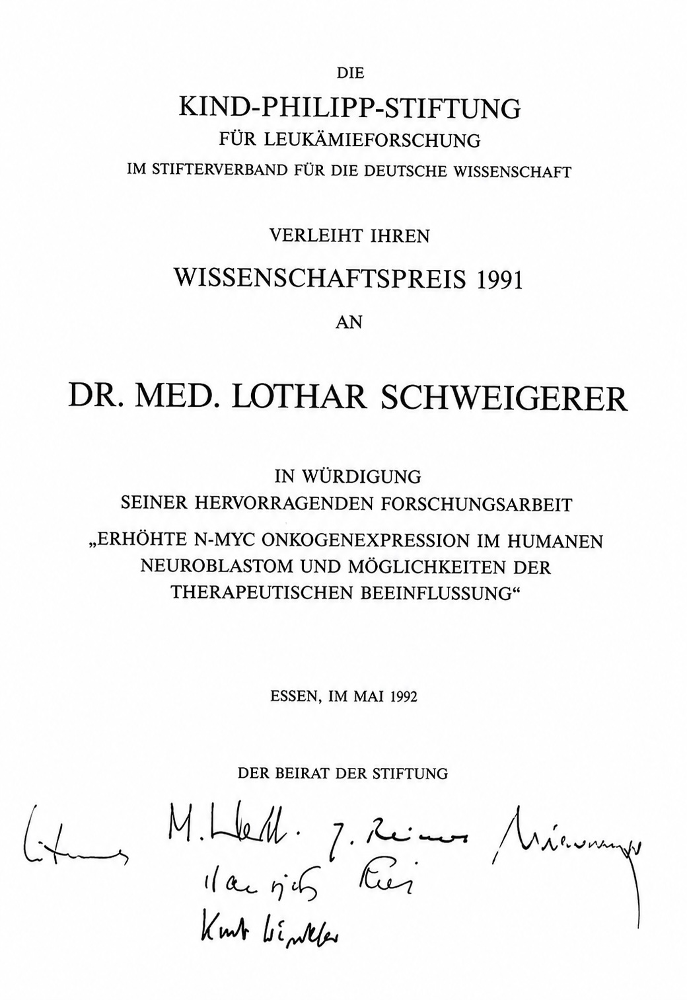
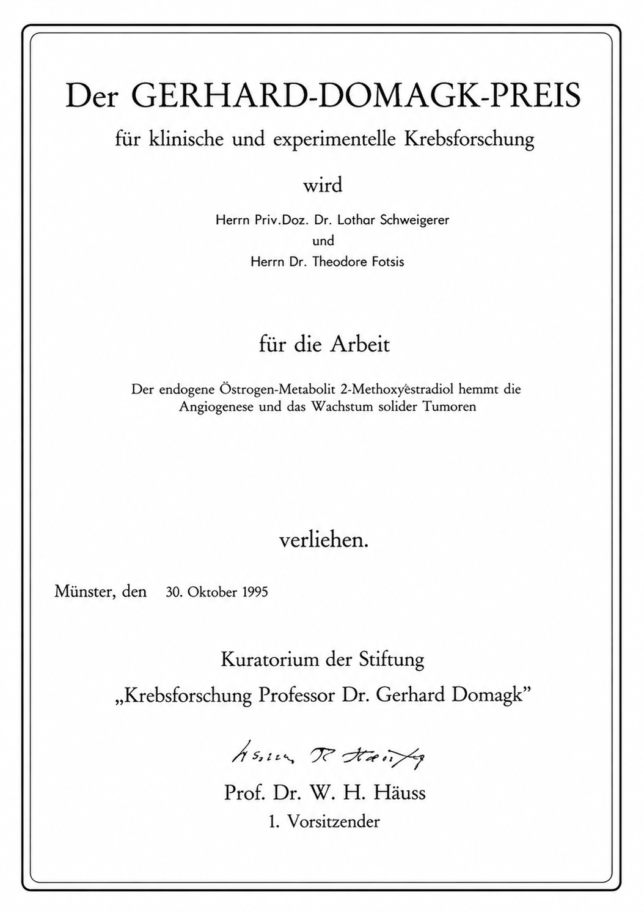
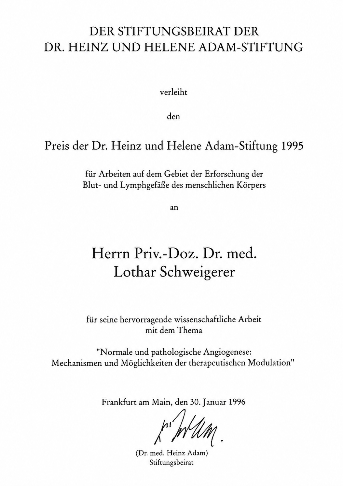

Preisurkunde der European Society of Medical Oncology
In Heidelberg sammelte ich Wissenschaftspreise. Das klingt nach einem Satz, den man besser nicht selbst über sich schreibt. Aber so war es nun einmal. Einige Preise bezogen sich noch auf Arbeiten aus dem DKFZ und aus San Francisco, die meisten waren aber das Ergebnis der Heidelberger Jahre.
Der erste war 1988 der Young Investigator Award der European Society for Medical Oncology. Danach folgte 1991 der Wissenschaftspreis der Kind-Philipp-Stiftung für Leukämieforschung im Stifterverband für die Deutsche Wissenschaft. 1995 kam der Gerhard-Domagk-Preis für klinische und experimentelle Krebsforschung hinzu, 1996 der Preis der Dr. Heinz und Helene Adam-Stiftung zur Erforschung von Blut- und Lymphgefäßerkrankungen.

Das ist die trockene Liste. Sie liest sich ordentlich. Fast so, als sei da jemand zielstrebig auf einer akademischen Treppe nach oben gestiegen, Stufe für Stufe, mit angemessenem Gesichtsausdruck und geputzten Schuhen.
Ganz so fühlte es sich nicht an.
In der Klinik war ich lange „der Wissenschaftler“. Das war nicht unbedingt als Kompliment gemeint. Es klang eher wie eine Diagnose. Da war einer, der zwar publizierte, Anträge schrieb, Preise bekam und irgendwelche Moleküle wichtig fand, aber in der Klinik erst einmal nicht so recht dazugehörte. Ich konnte noch so viel über Tumorbiologie, Wachstumsfaktoren oder Angiogenese wissen; morgens in der Besprechung half mir das wenig, wenn ich nicht so berichtete, wie es erwartet wurde.

Ich verstand diese Sicht sogar ein Stück weit. Ich war klinisch anfangs unsicher. Ich kam nicht als fertiger Kinderarzt nach Heidelberg, sondern als jemand, der aus der Forschung kommend nun in der Pädiatrie seinen Platz suchte. Aber die Art, wie einem das gelegentlich vermittelt wurde, war nicht gerade dazu geeignet, einen jungen Arzt über Nacht zum souveränen Kliniker zu machen.
Draußen dagegen wurde meine Arbeit anders wahrgenommen. Auf Kongressen zählten Daten. In Gutachten zählten Publikationen. Bei Preisen zählte, ob eine Arbeit originell war, ob sie ein Feld voranbrachte und ob sie wissenschaftlich sauber war. Dort war ich nicht der etwas unbequeme Assistent in der letzten Reihe der Morgenbesprechung. Dort war ich jemand, der gute Forschung machte.

Diese Spaltung war typisch für meine Heidelberger Jahre. In einem Teil meines Lebens wurde ich ausgezeichnet. Im anderen Teil hatte ich Bauchschmerzen vor der Morgenbesprechung. Besonders merkwürdig war, dass die Klinik natürlich von den Preisen wusste. Man konnte sie nicht ganz ignorieren. Eine Universitätsklinik schmückt sich gern mit wissenschaftlicher Leistung, selbst wenn sie dem Menschen, der sie erbringt, im Alltag nicht immer das Gefühl gibt, willkommen zu sein. Preise sind nach außen nützlich. Sie machen sich gut in Jahresberichten, Festreden und Gesprächen mit Dekanen.
Intern blieb ich trotzdem lange in dieser Zwischenrolle. Für die Grundlagenforscher war ich der Mediziner. Für die Kliniker war ich der Wissenschaftler. Manchmal hatte ich den Eindruck, dass beide Seiten sich darin einig waren, dass ich eigentlich nicht ganz zu ihnen gehörte.
Vielleicht war genau das im Nachhinein mein Vorteil. Wer nirgends vollständig dazugehört, lernt, zwischen Welten zu gehen. Im Labor dachte ich klinischer als viele Biologen. In der Klinik dachte ich biologischer als viele reine Kliniker. Das machte mich nicht automatisch beliebter. Aber es prägte meinen Blick.
Die Preise waren deshalb für mich weniger Trophäen als Bestätigung. Sie sagten mir: Das, was du hier mühsam zwischen Klinikdienst, Labor und Familie aufbaust, wird gesehen. Vielleicht nicht immer von denen, die dir morgens gegenübersitzen. Aber von Menschen, die die Arbeit beurteilen können.
Die schönste Ironie kam am Ende. Bei meinem letzten Preis hielt Professor Bremer die Laudatio auf mich. Ausgerechnet Bremer, der mich als Kliniker lange nicht wirklich ernst genommen hatte. Für ihn war ich über Jahre vor allem der Wissenschaftler gewesen. Nun stand er da und würdigte genau diese wissenschaftliche Arbeit öffentlich.
Das hatte eine gewisse Komik. Keine große, keine laute. Eher diese trockene Komik, die das Leben gelegentlich liefert, wenn es sich die Mühe macht, einen Kreis zu schließen. Ich weiß nicht mehr, was Bremer in seiner Laudatio im Einzelnen sagte. Vermutlich war es korrekt, wohlwollend und nicht übermäßig emotional. Bremer war kein Mann für überschwängliche Gesten. Aber allein die Situation sagte genug.
Da stand der Chef, der mich klinisch lange eher als Sonderfall betrachtet hatte, und sprach über meine wissenschaftlichen Leistungen. Ich saß vermutlich ordentlich da, hörte zu und dachte mir meinen Teil.
Mehr Anerkennung draußen als drinnen – das beschreibt Heidelberg ziemlich gut. Aber vielleicht brauchte ich genau diese Spannung. Ohne die Klinik wäre meine Forschung zu abstrakt geblieben. Ohne die Forschung hätte ich die Klinik wahrscheinlich schwerer ertragen.
Und ohne Heidelberg hätte ich nie gelernt, dass Anerkennung manchmal von der falschen Seite kommt, aber trotzdem richtig sein kann.